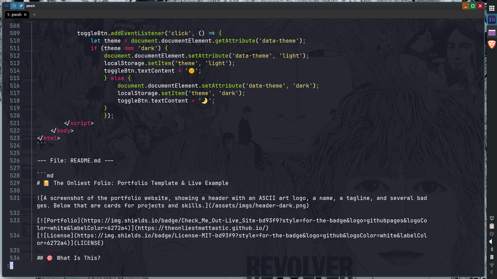
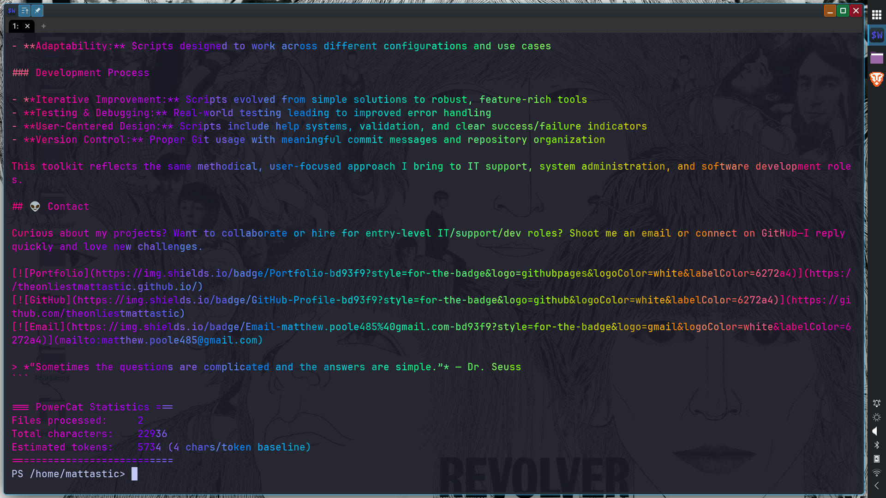
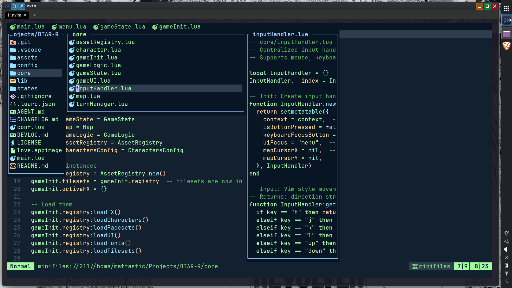
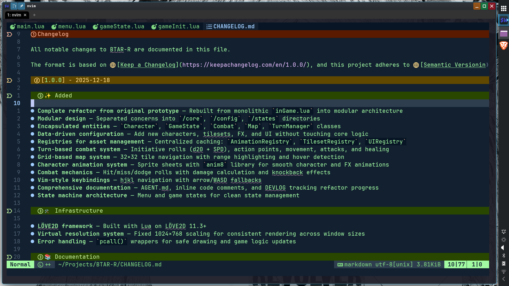

The Onliest Mattastic
Systems-focused software developer building game architecture, developer tooling, and automation software. Passionate about open-source software, resilient systems, and reducing developer friction through thoughtful engineering.
Spotlight
PowerCat — Precise PowerShell Utility
Developed an open-source PowerShell module published in the PowerShell Gallery that consolidates project source into AI-ready context with token estimation, customizable filtering, and Markdown-aware formatting.
Designed a Unix-inspired command-line interface emphasizing composability, deterministic output, and automation workflows.
Key Achievements: Published to official gallery · Comprehensive Pester test suite · CI/CD pipeline with GitHub Actions · Multiple ergonomic aliases
Built with: PowerShell · Pester (automated tests) · GitHub Actions (CI/CD)
Visual Showcase


Currently Working On
Vanguard & Flank
A 2D turn-based tactical RPG utilizing a custom-built ECS framework within Godot. Originally built as a class project in a single monolithic file, now being refactored into production-quality code.
Architectural Evolution: Demonstrates transformation from legacy code (single file utilizing Lua and the Love2D framework) to a maintainable ECS pattern to decouple game state from logic, ensuring high-performance data processing and modular system design.
Built with: Godot · GDScript · Inkscape
Project Showcase


Projects
HyperFix.nvim — Curated Neovim Distribution
Developed and maintained Neovim distribution emphasizing discoverability, low-friction workflows, and mnemonic keybinding design.
Unified editor, terminal, AI tooling, and development workflows into a cohesive Linux-first environment using Lua and modern Neovim plugins.
Built with WCAG AAA compliance and designed specifically to reduce cognitive load for neurodivergent developers.
BacMac6T
Built a high-density, automated backup appliance by integrating a 4TB HDD, two 1TB SSDs, and an industrial USB 3.0 hub into a space-constrained vintage Mac Mini chassis.
Designed a headless Debian environment utilizing Btrfs immutable snapshots and BorgBackup deduplication over an encrypted zero-trust mesh network powered by Tailscale.
Installed a custom active cooling system to maintain safe operating temperatures in a densely packed multi-drive enclosure.
StatelessIO
Technical Spikes
- Languages & Frameworks: C++, GDScript, JavaScript, Node.js, Lua, Bash, PowerShell
- Game Development: Godot 4, Unreal Engine 4, Love2D, Blender, Material Maker, Inkscape
- Infrastructure: Linux, Windows, Docker, GitHub Actions, Podman, BorgBackup, Tailscale
- Tools: Git, Neovim, WezTerm, Obsidian
Experience & Strengths
- IT & Support: Built and configured dozens of systems; diagnosed OS/network issues; documented solutions for knowledge reuse.
- HR & Data Coordination: Managed sensitive records, optimized processes, ensured compliance (Army National Guard, The Animal Foundation).
- Retail & Technical Support: POS troubleshooting, device/network setup, inventory management, end‑user training (AllSaints, Coffee Shop Keyholder).
- Core Strengths: Self‑motivated learner · Problem solver · Detail‑oriented · Creative thinker · Effective communicator
Achievements
- CompTIA A+ Certified
- CS50 Intro to Computer Science Certificate
- Unreal Engine 5 C++ Game Developer Certificate
- Summa Cum Laude Graduate (CCNY, 4.0 GPA)
- Multiple creative writing awards and scholarships